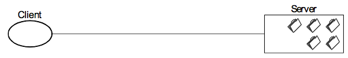
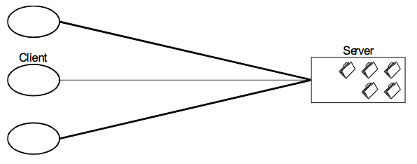
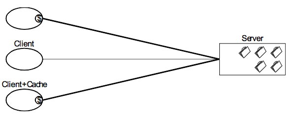
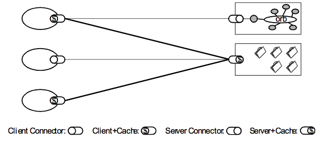
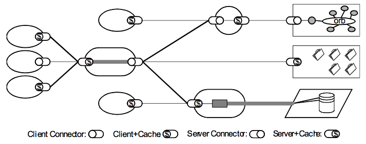
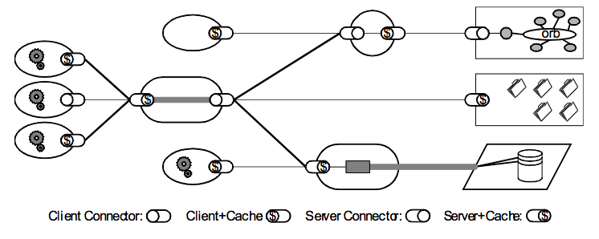

RESTful Web
本文是Horizon第二次线下活动中“RESTful Web”讲题的总结，由Alvin Qi整理。
REST的全称是Representational State Transfer，可译为“表征状态转移”，是Roy Fielding博士在2000年他的博士论文中提出的一种软件架构风格。目前，在三中主流的Web服务实现方式中，与SOA和RPC相比，REST的实现更为简洁，因而得到越来越多的商业公司和开发者的青睐。
本文将简单介绍给读者，如何理解REST、以及举例说明在开发场景的简单应用。
REST从哪里来?
在理解REST之前，先要对Web和Web Service有一个简单的认识。
一切还要从互联网诞生说起。互联网从诞生至今，经历了几个发展阶段：
-
阶段一：静态内容阶段
互联网本身是为欧美各高校/研究院共享信息而诞生的，在最初的那个年代，能访问到的互联网内容全都是文本内容（很多是于科研有关的论文、资料），所谓的Web服务器更像是一台支持解析超文本的文件共享服务器。
-
阶段二：CGI程序阶段
后来人们想在Web上加入更多的功能，而非原先简单的超文本解析。这就需要Web服务器提供可用的API，通过程序与客户端进行通信，达到内容交互的作用。服务器与客户端程序的通信由CGI（通用网关接口）协议来完成，而这些用于通信的程序就叫做CGI程序。
-
阶段三：脚本语言阶段
CGI程序有相对较高的安全隐患和开发难度。后来，在服务器端就出现了PHP、ASP、JSP等支持session的脚本语言，浏览器端也诞生了JavaScript、Java Applet，这大大降低了Web开发的难度，而互联网上的内容与交互形式也变得更为丰富。
-
阶段四：Thin Client App阶段
脚本语言易于开发，但大量的堆积却不利于项目的维护，所以就有人提出了MVC开发模式，也就渐渐诞生了各类MVC开发框架。同时，也诞生了独立于Web服务器的应用服务器，这就为瘦客户端应用提供了有力的发展条件。在这个阶段里，瘦客户端不再简单的解析HTML、执行JavaScript，而是单独执行其他的程序代码，从而提供了极为丰富的人机交互方式。互联网也变得更加精彩。
-
阶段五：Rich Internet App阶段
层出不穷的瘦客户端技术令开发者头晕目眩，而这时传统的Web技术有了新的发展，给开发者提供了互联网内容和交互形式都可兼得的选择。这期间，以JavaScript为核心的前端技术高速发展，诞生了Ajax、jQuery、ExtJs等模式与框架。这些技术一直到现在都炙手可热。
-
阶段六：Mobile App阶段
iOS的诞生使移动互联网爆发性增长，后来也有Android和Windows Phone加入，而从前的前端技术也同时顾及桌面端和移动端。原生移动平台开发很受欢迎的同时，基于HTML5的开发技术也变得很流行。
从这个过程来看，Web变得越来越复杂；为了支持这样庞大的互联网，背后的技术也在不断更新。当CGI乃至服务器端脚本语言出现后，HTTP/1.0便无法满足Web开发的要求，HTTP/1.1应运而生，其作者之一的Roy Fielding博士在HTTP/1.1的基础上推导出了一种全新的软件架构风格，也就是REST。
说到REST，就必须先对Web Service有一个基本的认识。
Web服务，直观的认识可以是“万维网上的一套消息传递机制”；实际上，W3C组织给出了精准的定义：Web服务应带是一个软件系统，用以支持网络间不同机器的互动操作，网络服务通常是由许多API组成，它们通过网络来执行客户提交的各种请求。
看过这个较为抽象的定义后，如果感觉吃不消，可以结合Web服务的使用方式来进一步理解。
Web服务有三种普遍的实现方式，分别是：RPC，SOA，REST。
-
远程过程调用（RPC）
这是一种早期的Web服务实现方式，最容易理解，要求Web服务提供一个分布式函数或方法接口供用户调用。就好比把一套系统的函数、方法（包含参数）提供给开发者（这样做同时也会把部分信息暴露在开放的互联网上）。 这里给出一组例子，可以感受一下。
Server端
getUser(id)
addUser(id, name)
removeUser(id)
updateUser(id, attr)
getLocation(id)
addLocation(id, Px, Py)
removeLocation(id)
updateLocation(id, Px, Py)
Client端
exampleAppObject = new ExampleApp("example.com:1234")
exampleAppObject.getUser(id)
这样做的弊端在于耦合性强和安全性差。当一套系统变得庞大时，组织合理的函数、方法接口将会变得非常繁琐；而且接口和程序语言有一定的关联，这样也限制了开发者。
-
服务导向架构（SOA）
现在，业界关注的重点是遵从服务导向架构（Service-oriented Architecure）来构建的Web服务。在这种架构中，通讯由消息驱动，而不是再由某个具体的动作（函数或方法调用）来实现。这种方式与RPC的最大区别是，更加关注如何去连接服务，而非关心特定细节的实现。关于SOA的更详细的资料可以查阅互联网。
-
表征状态转移（REST）
表征状态转移类型的Web服务类似HTTP或其他协议，它们以资源为核心，把接口限定在一组广为人知的标准动作中（如GET, PUT, DELETE等），以供调用。这类Web服务与前面两个相比，更加关注资源本身，而非消息或动作。 下面再给出一组例子。
Server端
http://example.com/users/
http://example.com/users/{user}
http://example.com/findUserForm
http://example.com/locations
http://example.con/locations/{location}
http://example.com/findLocationForm
Client端
userResource = new Resource("http://example.com:1234")
userResource.get(:id)
显然，这种Web服务的方式并不受限于编程语言种类，组织庞大的URI也不是很繁琐，而且以资源为核心，以HTTP协议为基础，更便于在互联网上传播。 所以，现在的互联网就是由各个Web服务构成的，从程序的角度来看，好像就是这样。
但作为普通网民，真的难以理解上面讨论的内容，因为他们才不管什么RPC/SOA/REST，他们只关心互联网的内容。所以，我们可以拓宽对“Web服务”的理解，把Web服务看做是两部分：
-
面向人类用户的Web服务
也就是我们打开浏览器、App所访问的Web内容。
-
面向程序/程序员的Web服务
如上所说的一套软件系统，最关键的是那组API。
所以，互联网还是由各类Web服务组成的，这就又回到了RESTful Web的话题上。
以上，可以认为：RESTful Web就是以HTTP/1.1为基础，以资源为核心提供的现代Web服务，而“表征状态转移”就作为一种架构风格（或规范）存在，而非业界标准。
怎样才能REST？
前面说的网站、Web服务，其实都是存在于生产环境中的分布式Web系统。所以要想做到REST，我们可以假象有一个“初始化”的Web分布式系统，给它加上约束条件，使之成为RESTful的系统。
REST架构风格中最重要的架构约束有6个：
-
客户-服务器

由客户端发出“请求”，作为通信的开始，服务器进行“响应”。
-
无状态

仅由客户端负责维护通信的会话状态
-
缓存

响应的内容应该可以在通信链的某个环节被缓存，以改善网络效率。
-
统一接口

“客户端-服务器”通信链组件之间应通过统一的软件接口来实现通信，从而提高交互的可见性。
-
分层系统

限制各组件的行为，实现通信链上下游分层。
-
按需代码

支持下载并执行一些代码（如JavaScript），对客户端功能进行扩展。
这其中，第六个约束是可选特性，也就是说仅符合前五个约束的Web分布式系统也可以看做是满足REST设计风格的。
但是，究竟怎样才能做到RESTful？
对于软件架构师，可以顺着上面的思路，最终能推导出一套满足REST的软件系统；而对于程序员也许更简单——使用支持REST的开发框架。但框架也有正确的使用方式，对于这类框架，就需要用符合REST规范的编程方法。
规范使用HTTP动词
HTTP/1.1规范规定了八个动词：OPTION, HEAD, GET, POST, PUT, DELETE, TRACE, CONNECT，分别代表了不同的语义，其中GET, PUT, POST, DELETE就是CRUD的语义化动词，在开发Web系统中非常常用。
强调规范使用这些动词，是因为有不规范的情况出现。比如GET，作为一个安全动词，原本是用于发出查找请求。下面有两个不好的例子：
# Add cart
GET /add_cart?pid=1234 HTTP/1.1
Host: www.example.org
# Delete note
GET /notes/delete?id=1234 HTTP/1.1
Host: www.example.org
本来是用于请求查询的报文却在请求增加/减少资源。这样写的程序可以执行，但有非常大的隐患，有可能在未知的情况下造成数据的大量变动，比如一些缓存程序或恶意攻击。
合理命名资源
资源可以看做是一个Web系统的核心，因为不论业务逻辑怎么复杂，都是对数据进行增删改查。但资源不同于数据，资源要有名称，而且是可以在万维网上可以定位到资源本身的名称——也就是URI（Uniform Resource Identifier）。所以资源命名就尤为重要，以满足易于编程和用户可读为标准。看下面这些例子，就能体会到。
POST http://example.com/customers
GET http://example.com/customers/123
DELETE http://example.com/products/123
PUT http://example.com/customers/123/orders/45
真实的互联网还有更多形象的例子，它们那样良好的命名设计使得不论是普通用户还是开发人员都能更方便地在网上完成相关业务，这也是REST优势的一点体现。
利用HTTP响应码指示状态
状态响应码是HTTP协议中规定的一部分。协议中规定了很多组数字，用来表示网络中可能发生的最常见的情况。如果需要开发Web系统的API，那么就需要按照HTTP报文的要求，为响应报文中提供准确的响应代码，以区分相关请求的执行状态。
比如在客户端执行了某个GET请求，API通常需要返回200，表示请求成功，其他情况则按照需要返回403、404、405等。
这里列出几个常用的响应码：
- 200 OK
- 201 CREATED
- 204 NO CONTENT
- 400 BAD REQUEST
- 401 UNAUTHORIZED
- 403 FORBIDDEN
- 404 NOT FOUND
- 405 METHOD NOT ALLOWED
- 409 CONFLICT
- 500 INTERNAL SERVER ERROR
还有什么？
是的，关于REST还有非常多的内容，但本文到这里就要告一段落了，而想要深入了解REST的特性，乃至构建自己的RESTful Web系统，到此为止是远远不够的。
目前的主流编程语言，如Java、PHP、Python、Ruby、Node.js、C#等，都已经实现了各自的支持REST的编程框架，可以根据兴趣选择其中之一来学习并实践。
这里还有重要的阅读资料，以便深入研究REST架构范式：